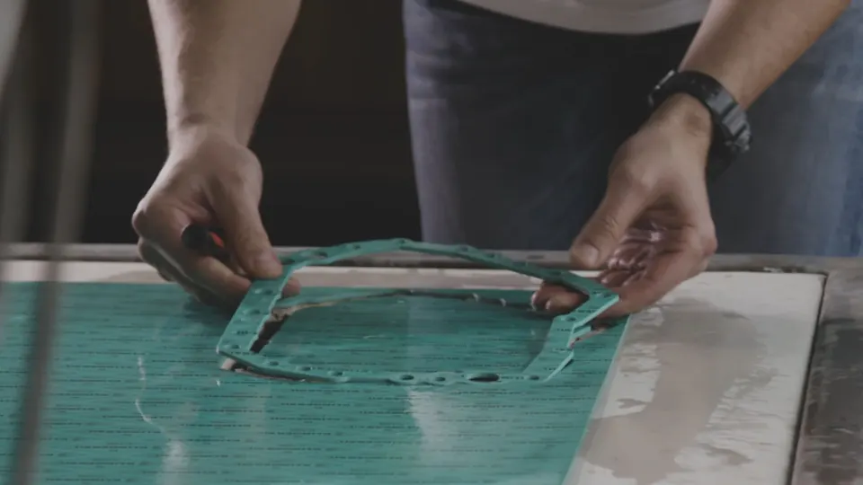

Krusz-Tech / Usługi / Cięcie wodą
Cięcie wodą stali i tworzyw do 20 cm grubości
Waterjet tnie na zimno: stal zachowuje twardość i geometrię, a krawędź nie jest przypalona. Pojedyncze detale i serie, wycena na podstawie pliku DWG, DXF lub zdjęcia elementu.

Kiedy cięcie stali wodą ma przewagę?
Gdy stal po rozkroju ma przypalone krawędzie, wymaga prostowania albo traci dokładność wymiarową, problem zwykle leży w doborze technologii, a nie w samym projekcie. Waterjet rozdziela materiał na zimno i nie zmienia jego struktury, więc detal zachowuje twardość, wytrzymałość i geometrię.
Metoda sprawdza się przy częściach maszyn, formatkach, wkładkach, osłonach i elementach o nieregularnym obrysie. Wybierają ją zakłady produkcyjne, narzędziownie i działy utrzymania ruchu, które chcą uniknąć nadpaleń, strefy wpływu ciepła i szlifowania po rozkroju.
Jak działa waterjet
Pompa podaje wodę pod ciśnieniem sięgającym około 6000 barów. W kryzie głowicy ciśnienie zamienia się w prędkość, a w komorze mieszającej woda łączy się z drobnym ścierniwem. Strumień leci z prędkością około 900-1000 m/s i przecina materiał na stole roboczym, a sterowanie CNC prowadzi go po trajektorii z pliku DWG lub DXF.
Parametry procesu a krawędź
| Cecha procesu | Co daje detalowi |
|---|---|
| Brak działania ciepła | Brak deformacji, nadpaleń i utraty twardości przy krawędzi |
| Dobór ścierniwa i prędkości | Cięcie rozdzielające albo gładka krawędź o wyższej jakości |
| Sterowanie CNC | Powtarzalne wymiary w pojedynczych sztukach i seriach |
| Odpływ urobku z wodą | Czystsze miejsce cięcia, mniejsze ryzyko uszkodzenia powierzchni |
Co tniemy wodą
Blachy aluminiowe i stalowe, grube płyty do ok. 20 cm, szkło, pleksi, elastomery, tworzywa sztuczne, mikrogumę, piankę, kamień i ceramikę. Uszczelki z płyt Klinger, Gambit i Polonit wycinamy na tym samym stole.




Najczęstsze pytania
Jakie materiały można ciąć wodą w Krusz-Tech?
Blachy aluminiowe, stal, szkło, pleksi, elastomery, tworzywa sztuczne, mikrogumę i piankę, do około 20 cm grubości, bez strefy wpływu ciepła.
Jak przesłać plik do wyceny?
Rysunek lub zdjęcie elementu przez formularz albo na adres produkcja@krusztech.pl. Obsługujemy DWG, DXF i formaty możliwe do konwersji. Proszę podać wymaganą jakość krawędzi.
Od czego zależy koszt?
Od gatunku i grubości materiału, długości cięcia oraz jakości krawędzi. Szybsze cięcie obniża koszt, cięcie jakościowe trwa dłużej, ale zwykle eliminuje wygładzanie.